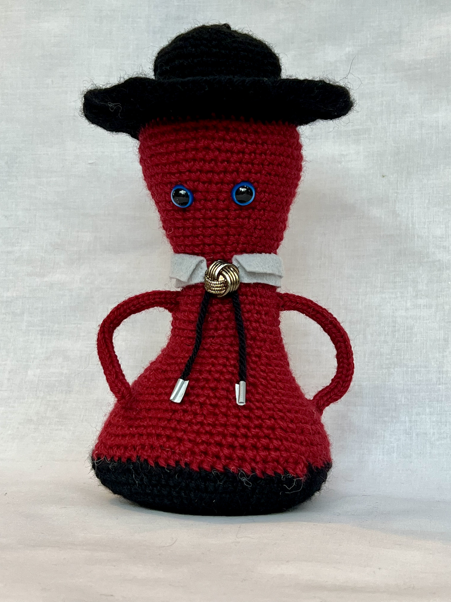

A Functional Family

Boo: The baby of the family
Boo is the function \(f(x)=\sqrt{-0.33x+.83}\) for \(0 \leq x \leq 2.515\) rotated about the \(x\)-axis.
NB: The hair of the family
NB is the function \(f(x)=-0.2725x+1.5\) for \(0 \leq x \leq 5.5\) rotated about the \(x\)-axis.
Yves: The reader of the family
Yves is the function \(f(x)=-.35\sin(2.16\cdot x)+1.5\) for \(0 \leq x \leq 5.5\) rotated about the \(x\)-axis.
Felicia: The matriarch of the family
Felicia is the function \(f(x)=.4\cos\left(2.31x\right)+1.8-0.154x\) for \(0 \leq x \leq 9.25\) rotated about the \(x\)-axis.
Clint: The pops of the family
Clint is the function \(f(x)=0.078\left(x-4\right)^{2}+1\) for \(0 \leq x \leq 7\) rotated about the \(x\)-axis.
Clint has a lovely hat that is the function \(f(x)=-8x^{3}+100x^{2}-416x+577.2\) for \(3.6 \leq x \leq 4.76\) rotated about the \(x\)-axis.